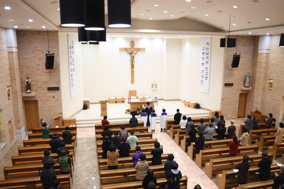
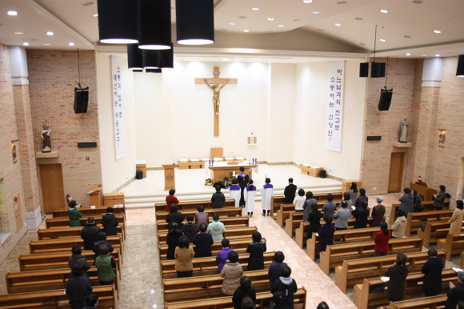

본당 소개
매탄동성당은 수원교구 소속으로, 지역 신자들과 함께 신앙 공동체를 이루고 있습니다. 다양한 미사와 교육, 봉사활동을 통해 복음을 전하고 사랑을 실천합니다.
연혁
1999년 설립 이후, 매탄동성당은 꾸준히 성장하며 지역사회와 함께하는 신앙의 터전이 되어왔습니다. 현재 25주년을 맞아 다양한 기념행사를 준비하고 있습니다.
 

오시는 길
주소: 경기도 수원시 영통구 매탄동
전화: 031-xxx-xxxx